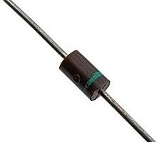
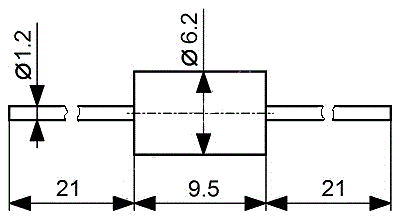
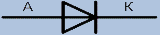

Диод КД226
Кремниевые диффузионные, выпрямительные диоды типов КД226 предназначены для работы в приемной, усилительной и другой радиоэлектронной аппаратуре при частоте питающего напряжения до 50кГц.


Рис. 1 - Внешний вид и размеры диода КД226
Таблица 1
| Диод | Uобр max, B | Iпр max, А | Iпр имп max, А | Uпр, B | Iобр, мкА |  |
|---|---|---|---|---|---|---|
| КД226А | 100 | 2 | 10 | 1,4 | 50 | |
| КД226Б | 200 | 2 | 10 | 1,4 | 50 | |
| КД226В | 400 | 2 | 10 | 1,4 | 50 | |
| КД226Г | 600 | 2 | 10 | 1,4 | 50 | |
| КД226Д | 800 | 2 | 10 | 1,4 | 50 | |
| КД226Е | 600 | 2 | 10 | 1,4 | 50 |